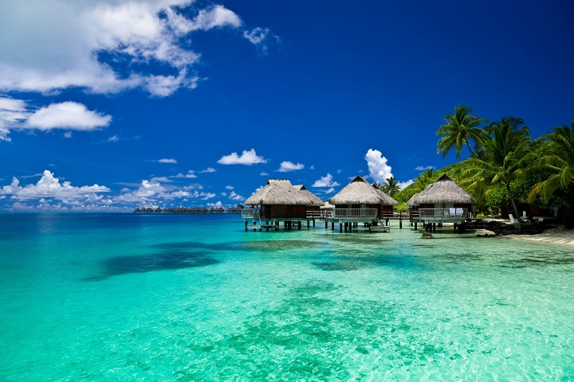
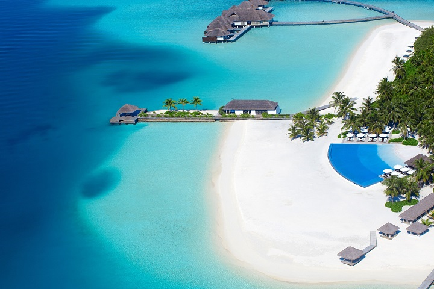
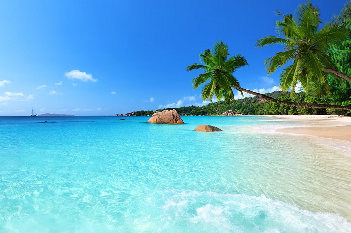
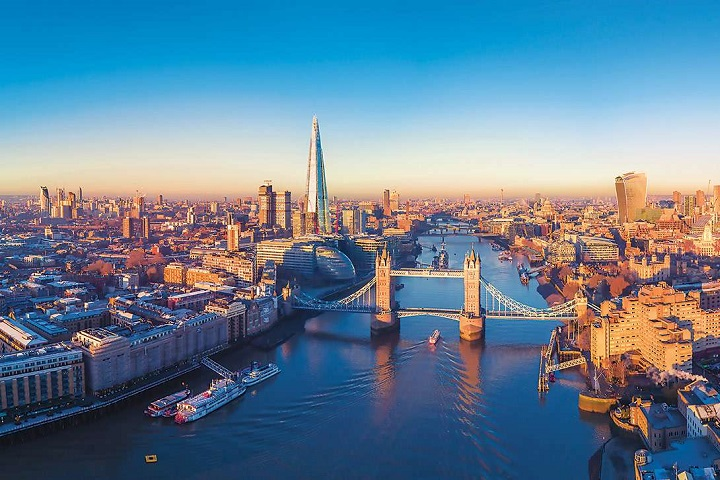
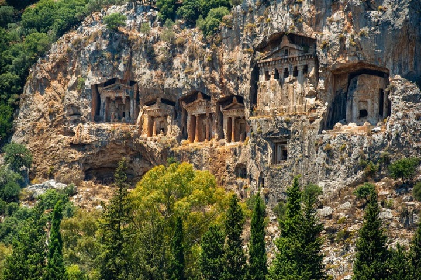

Playas
Anguilla
Las principales atracciones turísticas de Anguila son sus playas desiertas de arena blanca y fina, en las que contrastan maravillosamente las aguas turquesas del mar Caribe. La isla tiene un total de 33 playas, de las cuales unas diez son realmente excelentes. Entre ellas podemos mencionar Shoal Bay East, Cove Bay, Rendezvous Bay, Savannah Bay, Meads Bay, Shoal Bay West, Maunday’s Bay.
Bora Bora
Es una pequeña isla del Pacífico Sur al noroeste de Tahití en la Polinesia Francesa, que también es un popular complejo turístico lujoso donde algunos bungalows se ubican sobre pilotes en el agua. Esta rodeada de islotes con orillas de arena formando pequeñas playas, también tiene una laguna turquesa muy bella la cual se encuentra protegida por un arrecife de coral, la cual es muy visitada por quienes aman el buceo.
Maldivas
Maldivas es un país tropical en el océano Índico que abarca 26 atolones con forma de anillos que se componen de más de mil islas de coral. Es conocido por las playas, las lagunas azules y los extensos arrecifes. Los World Travel Awards 2020 celebrados en Londres, otorgaron reconocimiento a Maldivas como “Mejor destino del mundo".
Seychelles
Si eres amante de las playas, en Seychelles hallarás un paraíso tropical. Agua cristalina, arena blanca, cocoteros y palmeras. Un auténtico paraíso en la tierra, una playa de arena blanca y aguas de color turquesa rodeada por palmeras y bloques de granito.
Montañas
Aspen

Aspen es un bonito pueblo del estado de Colorado (EE.UU.). Y es una de las cunas del esquí, junto a otros países como Canadá o Suiza. Cualquier amante de los deportes invernales ha oído hablar de este lugar y ha soñado con viajar aqui.
Dolomitas

En verano es un paraíso para el senderista o el escalador! En invierno es una gozada sus 1200 km esquiables llenos de remontes, telesillas, telecabinas y teleféricos. Pistas bien preparadas. Los paisajes son magníficos, así como los pueblos que, en verano todos sus balcones y ventanas lucen macizos de flores. Es una región de majestuosa belleza, con comarcas parecidas a las del Tirol y un paisaje apabullante. El verde de los valles contrasta con la nieve de las montañas de una forma increíble.
Grandes Ciudades
Londres
Elegida la mejor ciudad del mundo para vivir y el mejor destino turistico urbano, a esta ciudad no le falta nada! Atracciones turisticas iconicas, historia por doquier y una enorme dosis de cultura en cada rincon! Ven a conocer todo esto y mucho mas en una ciudad que promete no aburrir! Y para los amantes del teatro, el mejor del mundo espera aca, eso si, preparen el oido porque las obras solo se presentan en el idioma local, el ingles.
Paris

Una de las ciudades más importantes en la historia del país galo y de toda Europa. Con más de dos millones de habitantes, la capital es una de las más pobladas del viejo continente, además de uno de los destinos más visitados de todo el mundo por sus innumerables atractivos, que exigen dedicarle varios días. Uno de ellos lo constituye el gran desarrollo arquitectónico del siglo XIX, que dejó joyas como el Mercado de la Madeleine, las Grandes Halles y la Torre Eiffel, icono por excelencia de la ciudad.
Escapes Romanticos
Venecia

Una de las ciudades mas romanticas del mundo, con el encanto que destilan sus puentes y canales se ha convertido en uno de los destinos más visitados del mundo. Situada en el noreste de Italia, la ciudad se erige sobre un conjunto de islas a orillas del Mar Adriático. Un paseo en góndola por sus canales, ya sea solo o en compañía, es una experiencia mágica para descubrir los rincones más bonitos de la capital del Véneto.
Pienza
Un clásico para hacer brotar el amor por los cuatro costados, exaltar la pasión hasta nivel dos rombos o retomar ambos tras un período de descuido. Arte para pasar toda una vida muriéndose y resucitando de síndromes con nombre de escritor decimonónico, paisajes que son puzzles de miles de piezas de colores para recorrer a pie, a caballo o en tren de vapor; cada rincon de este pueblo huele a besos robados.
Pequeñas Joyas
Dalyan
Dalyan, un pequeño pueblo situado en el suroeste de la costa Mediterránea de Turquía, compuesto de las aguas dulces y saladas y rodeado de cañas, fue elegido “el mejor espacio abierto de Europa y el laberinto más bello del mundo". El canal de Dalyan y la playa Iztuzu se han convertido en unos de los predilectos del turismo turco gracias a la antigua ciudad Kaunas, tumbas de roca, baños de barro y aguas termales.
San Marino

Puede presumir de ser la república más antigua del mundo, la única superviviente de las ciudades-estado que dominaron buena parte de la península Itálica durante la baja edad media, pero, a pesar de ello, es uno de los rincones más desconocidos de Europa. El perfil del monte Titano, con sus 739 metros de altura, dibuja la imagen más icónica del país, en cuyas laderas se extiende la ciudad medieval de San Marino, de calles estrechas y edificios históricos. Hermosa y accesible -a tamaño humano-, invita a ser descubierta sin un plan establecido.